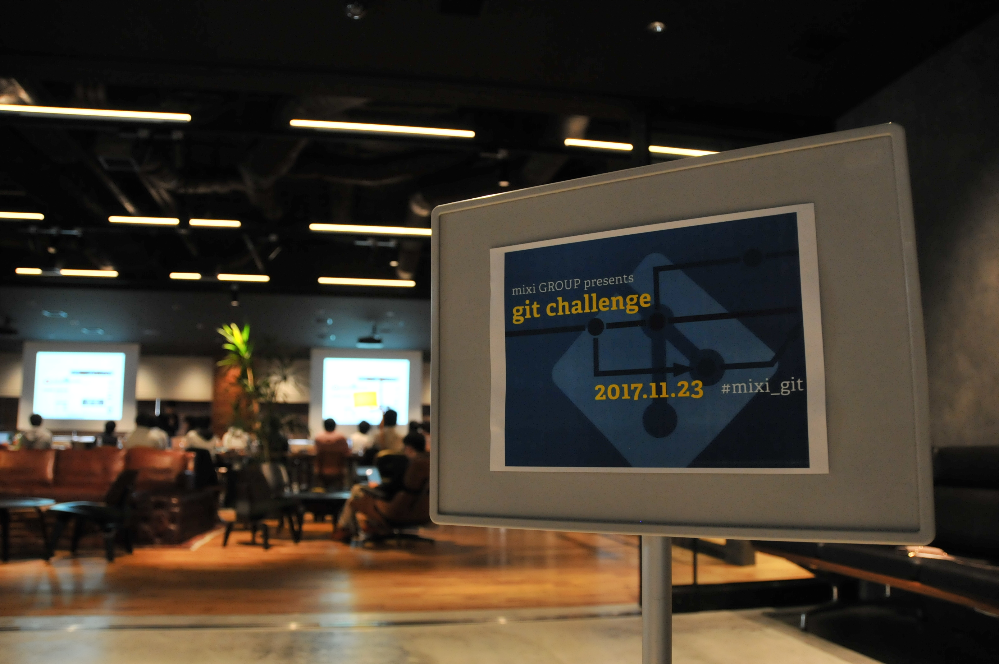

第7回大会は、比較的穏やかで、皆さんもくもくと一生懸命取り組んでいらっしゃる方の多い回になりました。 おやつタイムのご案内も皆さんスルーするほどの集中力でした。
| [git challenge #7 開催レポート - ミクシィグループ 人事部 採用ページ | Facebook](https://www.facebook.com/mixihr/posts/1963562007233113) |
| [git challenge ＃7 に参加してきました | 東京工業大学デジタル創作同好会traP](https://trap.jp/post/376/) |

git challenge第7回大会がはじまりました！競技開始を前に、まずは各サービスのgitの活用事例を現場エンジニアにお話いただきました。今はチュートリアル中です。#mixi_git pic.twitter.com/T6PjuMTR9H
— ミクシィグループ 新卒採用公式アカウント (@HR_mixi) November 23, 2017
今日のランチは「お好み焼き」をご用意しました！午後からの競技頑張ってください！ #mixi_git pic.twitter.com/pee3Xpvjjb
— ミクシィグループ 新卒採用公式アカウント (@HR_mixi) November 23, 2017
競技中です。解答をリセットしたいときには、こちらのボタンでお知らせいただいています。押すと面白い音がなります。 #mixi_git pic.twitter.com/U2Z3wUY8Rm
— ミクシィグループ 新卒採用公式アカウント (@HR_mixi) November 23, 2017
恒例の3時のおやつは「おはぎ」をお届けしました。競技も中盤戦に差し掛かりました！ #mixi_git pic.twitter.com/MX4rCk6zoH
— ミクシィグループ 新卒採用公式アカウント (@HR_mixi) November 23, 2017
競技終了！皆さん、お疲れ様でした。只今問題解説中です。#mixi_git pic.twitter.com/rDWyJSuQpw
— ミクシィグループ 新卒採用公式アカウント (@HR_mixi) November 23, 2017